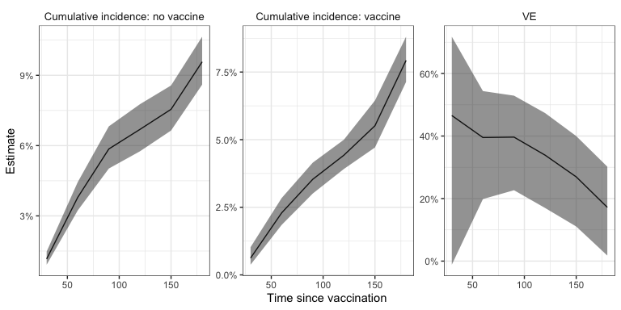
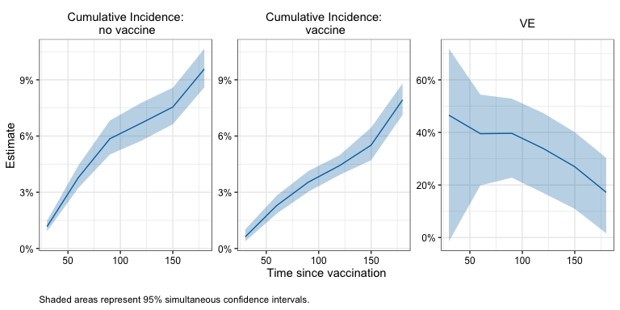

Estimate vaccine effectiveness in observational studies: a matching alternative
Description
The nomatchVE package uses a G-computation style estimator to compute vaccine efficacy from observational vaccine studies. The proposed estimator tends to produce similar point estimates as matching-based estimators but is more efficient.
Installation
You can install the development version of nomatchVE like so:
# TODO: not yet available on Github
# install.packages("devtools")
devtools::install_github("ewu16/nomatchVE")Example
This minimal example shows how to use nomatchVE to obtain cumulative incidence and vaccine effectiveness estimates in a simple simulated data set.
library(nomatchVE)
# Set seed for reproducibility
set.seed(1234)
# ------------------------------------------------------------------------------
# Example data
head(simdata)
#> ID x1 x2 V D_obs Y event
#> 1 1 1 7 1 2 92 0
#> 2 2 0 7 0 NA 210 0
#> 3 3 0 11 1 35 210 0
#> 4 4 0 10 1 6 210 0
#> 5 5 1 11 0 NA 210 0
#> 6 6 1 7 0 NA 90 0
summary(simdata)
#> ID x1 x2 V
#> Min. : 1 Min. :0.0000 Min. : 5.000 Min. :0.0000
#> 1st Qu.: 2501 1st Qu.:0.0000 1st Qu.: 6.000 1st Qu.:0.0000
#> Median : 5000 Median :0.0000 Median : 8.000 Median :0.0000
#> Mean : 5000 Mean :0.4989 Mean : 8.023 Mean :0.4112
#> 3rd Qu.: 7500 3rd Qu.:1.0000 3rd Qu.:10.000 3rd Qu.:1.0000
#> Max. :10000 Max. :1.0000 Max. :11.000 Max. :1.0000
#>
#> D_obs Y event
#> Min. : 1.00 Min. : 1 Min. :0.0000
#> 1st Qu.: 11.00 1st Qu.:174 1st Qu.:0.0000
#> Median : 18.00 Median :210 Median :0.0000
#> Mean : 25.78 Mean :178 Mean :0.1007
#> 3rd Qu.: 32.00 3rd Qu.:210 3rd Qu.:0.0000
#> Max. :206.00 Max. :210 Max. :1.0000
#> NA's :5888
# ------------------------------------------------------------------------------
# 1. Set input parameters
outcome_name <- "Y"
event_name <- "event"
trt_name <- "V"
time_name <- "D_obs"
adjust_vars <- c("x1", "x2")
times <- seq(30, 180, by = 30)
censor_time <- max(times)
tau <- 14
ci_type <- "wald"
n_boot <- 10
alpha <- .05
# ------------------------------------------------------------------------------
# 2. Compute VE estimand at time points
fit1 <- nomatchVE(data = simdata,
outcome_name = outcome_name,
event_name = event_name,
trt_name = trt_name,
time_name = time_name,
adjust_vars = adjust_vars,
times = times,
censor_time = censor_time,
tau = tau,
ci_type = ci_type,
n_boot = n_boot,
alpha = alpha)
#> Bootstrapping...
#> Time difference of 1.170502 secs
fit1$estimates
#> $risk_0
#> estimate wald_lower wald_upper wald_sd wald_n boot_sd
#> 30 0.01163891 0.009421632 0.01437044 0.10897478 10 0.001223885
#> 60 0.03790915 0.032977413 0.04354521 0.07371694 10 0.002621353
#> 90 0.05857293 0.051107595 0.06705168 0.07359223 10 0.004046512
#> 120 0.06691947 0.058551925 0.07638578 0.07270729 10 0.004563564
#> 150 0.07548793 0.067354759 0.08451420 0.06263278 10 0.004406041
#> 180 0.09576440 0.087057130 0.10524216 0.05352640 10 0.004684788
#>
#> $risk_1
#> estimate wald_lower wald_upper wald_sd wald_n boot_sd
#> 30 0.006219935 0.00419231 0.009219148 0.20232299 10 0.001340445
#> 60 0.022925618 0.01939429 0.027082177 0.08718734 10 0.002060689
#> 90 0.035346676 0.03121058 0.040008256 0.06567753 10 0.002292971
#> 120 0.044244807 0.04022530 0.048645599 0.05073486 10 0.002232851
#> 150 0.055146409 0.04860045 0.062516101 0.06799253 10 0.003623622
#> 180 0.079293545 0.07283785 0.086268172 0.04689277 10 0.003508187
#>
#> $ve
#> estimate wald_lower wald_upper wald_sd wald_n boot_sd
#> 30 0.4655914 0.09017978 0.6861000 0.27147761 10 0.16959167
#> 60 0.3952484 0.23590116 0.5213649 0.11932839 10 0.07678447
#> 90 0.3965357 0.25939031 0.5082846 0.10448500 10 0.06355249
#> 120 0.3388351 0.20113506 0.4527998 0.09652655 10 0.06539091
#> 150 0.2694672 0.13871445 0.3803702 0.08400764 10 0.06150869
#> 180 0.1719935 0.04444629 0.2825158 0.07309828 10 0.06043334
#Plot pointwise intervals
plot_ve_panel(fit1 , ci_type = "wald") 
#Compute simultaneous CI
simul_ci <- simultaneous_ci(fit1, alpha, seed = 1234)
simul_ci$estimates
#> $risk_0
#> estimate simul_lower simul_upper simul_n
#> 30 0.01163891 0.009154859 0.01478692 10
#> 60 0.03790915 0.032357671 0.04436940 10
#> 90 0.05857293 0.050166391 0.06828691 10
#> 120 0.06691947 0.057494687 0.07776174 10
#> 150 0.07548793 0.066315508 0.08581243 10
#> 180 0.09576440 0.085931940 0.10659071 10
#>
#> $risk_1
#> estimate simul_lower simul_upper simul_n
#> 30 0.006219935 0.00376434 0.01026089 10
#> 60 0.022925618 0.01852783 0.02833712 10
#> 90 0.035346676 0.03016674 0.04137811 10
#> 120 0.044244807 0.03919162 0.04991567 10
#> 150 0.055146409 0.04694784 0.06467954 10
#> 180 0.079293545 0.07116372 0.08826387 10
#>
#> $ve
#> estimate simul_lower simul_upper simul_n
#> 30 0.4655914 -0.01193416 0.7177756 10
#> 60 0.3952484 0.19932669 0.5432288 10
#> 90 0.3965357 0.22844064 0.5280088 10
#> 120 0.3388351 0.17034211 0.4731092 10
#> 150 0.2694672 0.10989235 0.4004341 10
#> 180 0.1719935 0.01668185 0.3027743 10
#Plot simultaneous confidence bands
plot_ve_panel(simul_ci , ci_type = "simul") 
# ------------------------------------------------------------------------------
# 3. Compare results with matching estimator
id_name <- "ID"
matching_vars <- adjust_vars
matched_cohort <- match_rolling_cohort(data = simdata,
outcome_name = outcome_name,
trt_name = trt_name,
time_name = time_name,
id_name = id_name,
matching_vars = adjust_vars,
replace = FALSE,
seed = 5678)
matched_data <- matched_cohort[[1]]
fit_matching <-matching_ve(matched_data = matched_data,
outcome_name = outcome_name,
event_name = event_name,
trt_name = trt_name,
time_name = time_name,
method = "km",
times = times,
censor_time = censor_time,
tau = tau,
ci_type = ci_type,
n_boot = n_boot,
alpha = alpha)
#> Bootstrapping...
#> Time difference of 0.7738459 secs
## Proposed and matching based estimators have similar point estimates
## Proposed has narrower confidence intervals
fit1$estimates
#> $risk_0
#> estimate wald_lower wald_upper wald_sd wald_n boot_sd
#> 30 0.01163891 0.009421632 0.01437044 0.10897478 10 0.001223885
#> 60 0.03790915 0.032977413 0.04354521 0.07371694 10 0.002621353
#> 90 0.05857293 0.051107595 0.06705168 0.07359223 10 0.004046512
#> 120 0.06691947 0.058551925 0.07638578 0.07270729 10 0.004563564
#> 150 0.07548793 0.067354759 0.08451420 0.06263278 10 0.004406041
#> 180 0.09576440 0.087057130 0.10524216 0.05352640 10 0.004684788
#>
#> $risk_1
#> estimate wald_lower wald_upper wald_sd wald_n boot_sd
#> 30 0.006219935 0.00419231 0.009219148 0.20232299 10 0.001340445
#> 60 0.022925618 0.01939429 0.027082177 0.08718734 10 0.002060689
#> 90 0.035346676 0.03121058 0.040008256 0.06567753 10 0.002292971
#> 120 0.044244807 0.04022530 0.048645599 0.05073486 10 0.002232851
#> 150 0.055146409 0.04860045 0.062516101 0.06799253 10 0.003623622
#> 180 0.079293545 0.07283785 0.086268172 0.04689277 10 0.003508187
#>
#> $ve
#> estimate wald_lower wald_upper wald_sd wald_n boot_sd
#> 30 0.4655914 0.09017978 0.6861000 0.27147761 10 0.16959167
#> 60 0.3952484 0.23590116 0.5213649 0.11932839 10 0.07678447
#> 90 0.3965357 0.25939031 0.5082846 0.10448500 10 0.06355249
#> 120 0.3388351 0.20113506 0.4527998 0.09652655 10 0.06539091
#> 150 0.2694672 0.13871445 0.3803702 0.08400764 10 0.06150869
#> 180 0.1719935 0.04444629 0.2825158 0.07309828 10 0.06043334
fit_matching$estimates
#> $risk_0
#> estimate wald_lower wald_upper wald_sd wald_n boot_sd
#> 30 0.01086261 0.00816117 0.01444522 0.14728132 10 0.001502621
#> 60 0.04053224 0.03354123 0.04890665 0.10029884 10 0.003894920
#> 90 0.05649740 0.04659370 0.06835525 0.10366076 10 0.005442758
#> 120 0.06531227 0.05485152 0.07760418 0.09473619 10 0.005819909
#> 150 0.07506208 0.06538236 0.08604294 0.07575337 10 0.005310378
#> 180 0.09806838 0.08849193 0.10855774 0.05781499 10 0.005218119
#>
#> $risk_1
#> estimate wald_lower wald_upper wald_sd wald_n boot_sd
#> 30 0.005403358 0.002906644 0.01002311 0.31762240 10 0.001361844
#> 60 0.020951417 0.017859597 0.02456510 0.08307207 10 0.001668270
#> 90 0.034537618 0.027318416 0.04357910 0.12343988 10 0.003876624
#> 120 0.043854554 0.037473074 0.05126489 0.08362803 10 0.003333112
#> 150 0.053307254 0.048019169 0.05914151 0.05614514 10 0.002763259
#> 180 0.076044073 0.065802745 0.08772965 0.07942736 10 0.005423460
#>
#> $ve
#> estimate wald_lower wald_upper wald_sd wald_n boot_sd
#> 30 0.5025726 -0.13657853 0.7822992 0.4216037 10 0.19438046
#> 60 0.4830925 0.28538578 0.6261013 0.1652474 10 0.08775569
#> 90 0.3886866 0.09536997 0.5868984 0.1999609 10 0.12080363
#> 120 0.3285403 0.09629202 0.5011020 0.1515601 10 0.09715542
#> 150 0.2898245 0.11634727 0.4292449 0.1115082 10 0.07586956
#> 180 0.2245811 0.02449580 0.3836270 0.1171200 10 0.08576272